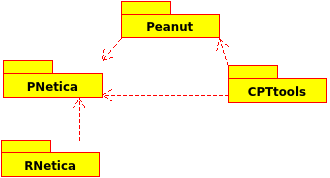
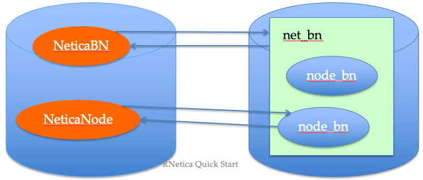
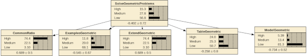
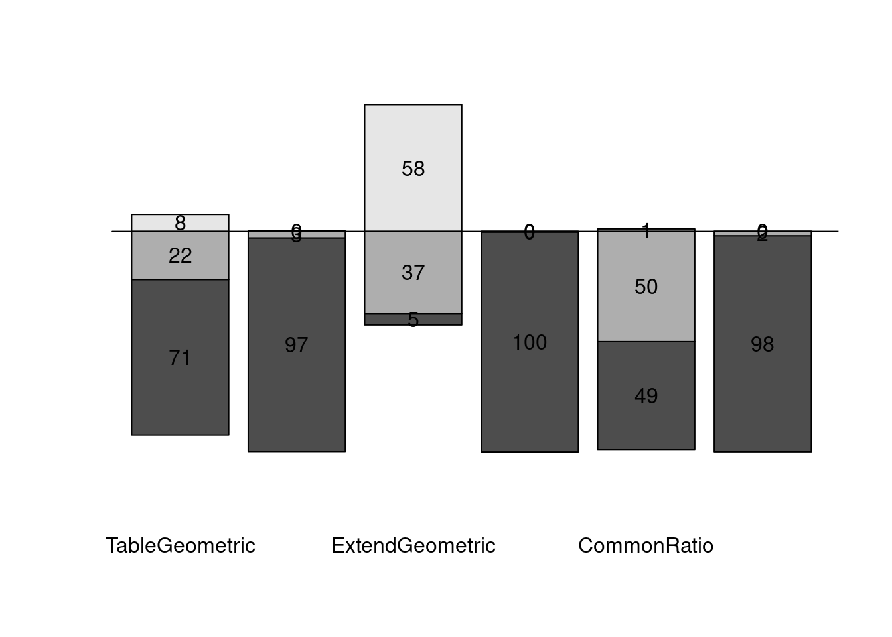

install.packages(c('CPTtootls','RNetica','Peanut','PNetica'),
repos = c('https://ralmond.r-universe.dev', 'https://cloud.r-project.org'))Scoring Individual Students
RNetica and Peanut Packages
The RNetica Packages
The RNetica suite consists of a number of packages:

Peanut packages
The Peanut object oriented framework rests on top of CPTtools and RNetica.
Peanut packages
The Peanut object oriented framework rests on top of CPTtools and RNetica.
Peanut(a corrupt reading of Pnet, or parameterized network) is an object oriented frame work on top ofCPTtools.PNeticais an implementation of thePeanutframework usingRNetica.
Packages can be installed through R-Universe
Source code is on github https://github.com/ralmond/.
License
- R – GPL-3 (Free and open source)
- RNetica – Artistic (Free and open source)
- Netica.dll/libNetica.so– Commercial (open API, but not open source)
- Free Student/Demo version
- Limited number of nodes
- Limited usage (education, evaluation of Netica)
- Paid version (seehttp://www.norsys.com/for price information)
- Need to purchase API not GUI version ofNetica
- May want both (use GUI to visualize networks built in RNetica)
- Free Student/Demo version
- CPTtools, Peanut – Artistic (Free and open source), does not depend on Netica
- PNetica – Artistic, but depends on RNetica.
Installing the License Key
When you purchase a license, Norsys will send you a license key. Something that looks like:
“+User/Organization/120,310-details/XXXXX”
(Where I’ve obscured the last 5 security digits) 120 – GUI, 310 – API (I think)
Three ways of installing the license key:
Use as argument to
NeticaSession(...,LicenseKey=XXX)Set
options(NeticaLicenseKey=XXX)
- This can be set in
.Rprofilein your home directory.
- Set an environmental variable
NeticaLicenseKeybefore launching R.
- This can be set in
.Renvironin your home directory.
Starting RNetica
After you load RNetica you need to start the session. This is when you pass the license key.
library(RNetica)
sess <- NeticaSession(LicenseKey=NeticaLicenseKey)
startSession(sess)library(RNetica)Loading required package: CPTtoolssess <- NeticaSession(LicenseKey="")
startSession(sess)Netica 6.07 Linux (AFCl64), (C) 1992-2019 Norsys Software Corp.
Netica is operating without a password; there are some limitations.Everything in this tutorial should run without the license.
When to use the session object.
- When starting/restarting Netica
- When creating a network, or reading one from a file.
- When searching for networks.
- Certain global properties
NeticaBN objects have a $Session property which points back to the session.
NeticaNode objects have a $net property which points back to the network (which points to the session).
The R heap and the Netica heap
R and Netica have two different workspaces (memory heaps)
R workspace is saved and restored automatically when you quick and restart R.
Netica heap must be reconnected manually.

Active and Inactive pointers
When RNetica creates/finds a Netica object it creates a corresponding R object
If the R object is active then it points to the Netica object, and the Netica object points back at it.
If the pointer gets broken (saving and restarting R, deleting the network/node then the R object becomes inactive.
The function is.active(nodeOrNet) test to see if the node/net is active.
Mini-ACED
Mini-ACED Proficiency model
Subset of ACED network: Shute, Hansen & Almond (2008); http://ecd.ralmond.net/ecdwiki/ACED
Download the mini-ACED file Unzip it in miniACED and that this folder is in the same directory as this qmd file.
Next, change directory into the directory that contains miniACED
if ("miniACED-Geometric.csv" %in% list.files("miniACED")) {
print("You're good to go.")
} else {
stop("You need to unpack 'miniACED.zip' or go to the directory where it is.")
}[1] "You're good to go."
Mini-ACED EM Fragments
All ACED tasks were scored correct/incorrect
Each evidence model is represented by a fragment consisting of observables with stub edges indicating where it should be adjoined with the network.


Scoring Script
Preliminaries
Task to EM map
Need a table to tell us which EM to use with which task
## Read in task->evidence model mapping
EMtable <- read.csv(file.path("miniACED","MiniACEDEMTable.csv"),
row.names=1,
as.is=2) #Keep EM names as strings
EMtable EM X Y
tCommonRatio1a CommonRatioEasyEM 108 294
tCommonRatio1b CommonRatioEasyEM 108 414
tCommonRatio2a CommonRatioMedEM 108 534
tCommonRatio2b CommonRatioMedEM 108 654
tCommonRatio3a CommonRatioHardEM 108 774
tCommonRatio3b CommonRatioHardEM 108 894
tExamplesGeometric1a ExamplesEasyEM 342 294
tExamplesGeometric1b ExamplesEasyEM 342 414
tExamplesGeometric2a ExamplesMedEM 342 534
tExamplesGeometric2b ExamplesMedEM 342 654
tExamplesGeometric3a ExamplesHardEM 342 774
tExamplesGeometric3b ExamplesHardEM 342 894
tExtendGeometric1a ExtendEasyEM 588 294
tExtendGeometric1b ExtendEasyEM 588 414
tExtendGeometric2a ExtendMedEM 588 534
tExtendGeometric2b ExtendMedEM 588 654
tExtendGeometric3a ExtendHardEM 588 774
tExtendGeometric3b ExtendHardEM 588 894
tTableExtendGeometric1a TableExtendEasyEM 1134 282
tTableExtendGeometric1b TableExtendEasyEM 1134 402
tTableExtendGeometric2a TableExtendMedEM 1134 522
tTableExtendGeometric2b TableExtendMedEM 1134 642
tTableExtendGeometric3a TableExtendHardEM 1134 762
tTableExtendGeometric3b TableExtendHardEM 1134 882
tModelExtendTableGeometric1a ModelTableExtendEasyEM 858 288
tModelExtendTableGeometric1b ModelTableExtendEasyEM 858 408
tModelExtendTableGeometric2a ModelTableExtendMedEM 858 528
tModelExtendTableGeometric2b ModelTableExtendMedEM 858 648
tModelExtendTableGeometric3a ModelTableExtendHardEM 858 768
tModelExtendTableGeometric3b ModelTableExtendHardEM 858 888## Scoring Script
## Preliminaries
#| eval=FALSE
library(RNetica)
sess <- NeticaSession()
startSession(sess)Netica environment is already initializedRead in the Network.
## Read in network -- Do this every time R is restarted
profModel <- ReadNetworks(file.path("miniACED","miniACEDPnet.dne"),session = sess)
## If profModels already exists could also use
## Reconnect nodes -- Do this every time R is restarted
allNodes <- NetworkAllNodes(profModel)
sgp <- allNodes$SolveGeometricProblems
sgpDiscrete Netica Node named SolveGeometricProblems in network MiniACEDPM
Node is currently active.
States are: High, Medium, Low Aside 1 – Node Sets
Node sets can be viewed as either
A. a set of labels assigned to each node.
B. a set of nodes which have a particular label.
In RNetica, these are very useful as they define collections of nodes that might be interesting in some way (e.g., Proficiency variables, Observable variable, background variables)
Node set operations yeild a list of nodes; iterating over that set is often very useful.
Node Set Examples
## Node Sets
NetworkNodeSets(profModel)[1] "pnodes" "Proficiencies"NetworkNodesInSet(profModel,"pnodes")$TableGeometric
Discrete Netica Node named TableGeometric in network MiniACEDPM
Node is currently active.
States are: High, Medium, Low
$ModelGeometric
Discrete Netica Node named ModelGeometric in network MiniACEDPM
Node is currently active.
States are: High, Medium, Low
$ExtendGeometric
Discrete Netica Node named ExtendGeometric in network MiniACEDPM
Node is currently active.
States are: High, Medium, Low
$ExamplesGeometric
Discrete Netica Node named ExamplesGeometric in network MiniACEDPM
Node is currently active.
States are: High, Medium, Low
$CommonRatio
Discrete Netica Node named CommonRatio in network MiniACEDPM
Node is currently active.
States are: High, Medium, Low
$SolveGeometricProblems
Discrete Netica Node named SolveGeometricProblems in network MiniACEDPM
Node is currently active.
States are: High, Medium, Low More Node Set Examples
profNodes <- NetworkNodesInSet(profModel,"Proficiencies")
NodeSets(sgp)[1] "pnodes" "Proficiencies"Adding a node to a set.
## These are all settable
NodeSets(sgp) <- c(NodeSets(sgp),"HighLevel")
NodeSets(sgp)[1] "HighLevel" "pnodes" "Proficiencies"Aside 2: Common Net operations
Just about everything that can be done through the Netica GUI, can be done through the Netica API, and hence through R Netica. [In practice, the API version has lagged the GUI version, and my RNetica release lag Norsys’s API updates.] Many more examples are in the RNetica help.
## Querying Nodes
NodeStates(sgp) #List states High Medium Low
"High" "Medium" "Low" NodeParents(sgp) #List parentsnamed list()More RNetica Queries
NodeLevels(sgp) #List numeric values associated with states High Medium Low
0.9674216 0.0000000 -0.9674216 NodeProbs(sgp) # Conditional Probability Table (as array)SolveGeometricProblems
High Medium Low
0.1532 0.2784 0.5684
attr(,"class")
[1] "CPA" "array"## These are all settable (can be used on RHS of <-) for model
## constructionConditional Probability Tables (as Data Frame)
sgp[] # Conditional Probability Table (as data frame) SolveGeometricProblems.High SolveGeometricProblems.Medium
0.1532 0.2784
SolveGeometricProblems.Low
0.5684 Can use [] operator to select rows or elements
Can set table or (row or cell).
CPTtools package has tools for building tables.
help(package="CPTtools")Inference
Networks must be compiled before they are used for inference.
## Inference
CompileNetwork(profModel) #Lightning bolt on GUI
## Must do this before inference
## Recompiling an already compiled network is harmless## Enter Evidence by setting values for these functions
NodeValue(sgp) #View or set the value[1] NANodeLikelihood(sgp) #Virtual evidence High Medium Low
1 1 1 Beliefs (Marginal Probabilities)
## Query beliefs
NodeBeliefs(sgp) #Current probability (given entered evidence) High Medium Low
0.1532 0.2784 0.5684 NodeExpectedValue(sgp) #If node has values, EAP[1] -0.4016734
attr(,"std_dev")
[1] 0.7169429## These aren't settable## Retract Evidence
RetractNodeFinding(profNodes$ExamplesGeometric)
RetractNetFindings(profModel)Example: Enter Evidence
## Enter Evidence
NodeFinding(profNodes$CommonRatio) <- "Medium"
## Enter Evidence "Not Low" ("High or Medium")
NodeLikelihood(profNodes$ExamplesGeometric) <- c(1,1,0)
NodeBeliefs(sgp) #Current probability (given entered evidence) High Medium Low
0.0000000 0.1811515 0.8188485 NodeExpectedValue(sgp) #If node has values, EAP[1] -0.7921717
attr(,"std_dev")
[1] 0.3725963Example: Retract Evidence
## Retract Evidence
RetractNetFindings(profModel)Many more examples:
help(RNetica)Back to work
Simple Scoring Example
Start New Student Copy the proficiency model to make student model.
Fred.SM <- CopyNetworks(profModel,"Fred")
Fred.SMvars <- NetworkAllNodes(Fred.SM)
CompileNetwork(Fred.SM)Setup score history.
prior <- NodeBeliefs(Fred.SMvars$SolveGeometricProblems)
Fred.History <- matrix(prior,1,3)
row.names(Fred.History) <- "*Baseline*"
colnames(Fred.History) <- names(prior)
Fred.History High Medium Low
*Baseline* 0.1532 0.2784 0.5684Fred does a task
Task name and data.
t.name <- "tCommonRatio1a"
t.isCorrect <- "Yes"Adjoin SM and EM
EMnet <- ReadNetworks(file.path("miniACED",
paste(EMtable[t.name,"EM"],"dne",sep=".")),
session = sess)
obs <- AdjoinNetwork(Fred.SM,EMnet)
names(NetworkAllNodes(Fred.SM)) [1] "SolveGeometricProblems" "CommonRatio" "ExamplesGeometric"
[4] "ExtendGeometric" "ModelGeometric" "TableGeometric"
[7] "isCorrect" ## Fred.SM is now the Motif for the current task.
CompileNetwork(Fred.SM)Absorb Evidence
Enter finding
NodeFinding(obs$isCorrect) <- t.isCorrectCalculate statistics of interest
post <- NodeBeliefs(Fred.SMvars$SolveGeometricProblems)
Fred.History <- rbind(Fred.History,new=post)
rownames(Fred.History)[nrow(Fred.History)] <- paste(t.name,t.isCorrect,sep="=")
Fred.History High Medium Low
*Baseline* 0.153200 0.2784000 0.5684000
tCommonRatio1a=Yes 0.160016 0.2893454 0.5506387Cleanup
Network and Observable no longer needed, so absorb it:
DeleteNetwork(EMnet) ## Delete EM
#try(AbsorbNodes(obs))
## Currently, there is a Netica bug with Absorb Nodes, we will
## leave this node in place, as that is mostly harmless.2nd Task
Write a script for scoring the second task.
This time Fred attempts the task tCommonRatio2a and gets it incorrect.
### Fred does another task
t.name <- "tCommonRatio2a"
t.isCorrect <- "No"
## Load Evidence Model and adjoin
## Recompile
## Add Evidence
## Check Finding and add to history
## Clean upAnswer for 2nd Task
### Fred does another task
t.name <- "tCommonRatio2a"
t.isCorrect <- "No"
EMnet <- ReadNetworks(file.path("miniACED",
paste(EMtable[t.name,"EM"],"dne", sep=".")),
session=sess)
obs <- AdjoinNetwork(Fred.SM,EMnet)
#NodeVisPos(obs$isCorrect) <- EMtable[t.name,c("X","Y")]
## Fred.SM is now the Motif for the current task.
CompileNetwork(Fred.SM)
NodeFinding(obs[[1]]) <- t.isCorrect
post <- NodeBeliefs(Fred.SMvars$SolveGeometricProblems)
Fred.History <- rbind(Fred.History,new=post)
rownames(Fred.History)[nrow(Fred.History)] <-
paste(t.name,t.isCorrect,sep="=")
Fred.History High Medium Low
*Baseline* 0.1532000 0.2784000 0.5684000
tCommonRatio1a=Yes 0.1600160 0.2893454 0.5506387
tCommonRatio2a=No 0.1064912 0.2057332 0.6877756## Cleanup: Delete EM and Absorb observables
DeleteNetwork(EMnet) ## Delete EM
#AbsorbNodes(obs)Fred does another task
t.name <- "tCommonRatio2a"
t.isCorrect <- "No"EMnet <- ReadNetworks(file.path("miniACED",
paste(EMtable[t.name,"EM"],"dne",sep=".")),
session=sess)
obs <- AdjoinNetwork(Fred.SM,EMnet)
(NetworkAllNodes(Fred.SM)) ## Fred.SM is now the Motif for the current task.$SolveGeometricProblems
Discrete Netica Node named SolveGeometricProblems in network Fred
Node is currently active.
States are: High, Medium, Low
$CommonRatio
Discrete Netica Node named CommonRatio in network Fred
Node is currently active.
States are: High, Medium, Low
$ExamplesGeometric
Discrete Netica Node named ExamplesGeometric in network Fred
Node is currently active.
States are: High, Medium, Low
$ExtendGeometric
Discrete Netica Node named ExtendGeometric in network Fred
Node is currently active.
States are: High, Medium, Low
$ModelGeometric
Discrete Netica Node named ModelGeometric in network Fred
Node is currently active.
States are: High, Medium, Low
$TableGeometric
Discrete Netica Node named TableGeometric in network Fred
Node is currently active.
States are: High, Medium, Low
$isCorrect
Discrete Netica Node named isCorrect in network Fred
Node is currently active.
States are: Yes, No
$isCorrect1
Discrete Netica Node named isCorrect1 in network Fred
Node is currently active.
States are: Yes, No
$isCorrect2
Discrete Netica Node named isCorrect2 in network Fred
Node is currently active.
States are: Yes, No CompileNetwork(Fred.SM)Task 2 continued
NodeFinding(obs[[1]]) <- t.isCorrect
post <- NodeBeliefs(Fred.SMvars$SolveGeometricProblems)
Fred.History <- rbind(Fred.History,new=post)
rownames(Fred.History)[nrow(Fred.History)] <- paste(t.name,t.isCorrect,sep="=")
Fred.History High Medium Low
*Baseline* 0.15320002 0.2784000 0.5684000
tCommonRatio1a=Yes 0.16001597 0.2893454 0.5506387
tCommonRatio2a=No 0.10649122 0.2057332 0.6877756
tCommonRatio2a=No 0.04991532 0.1159301 0.8341545Cleanup: Delete EM and Absorb observables
DeleteNetwork(EMnet) ## Delete EM
#try(AbsorbNodes(obs))
## Currently, there is a Netica bug with Absorb Nodes, we will leave
##this the node in place as that is mostly harmless.Fred logs out
Save network to a file.
WriteNetworks(Fred.SM,"FredSM.dne")
DeleteNetwork(Fred.SM)
is.active(Fred.SM) ## No longer active in Netica space[1] FALSEFred logs back in
Fred.SM <- ReadNetworks("FredSM.dne",session=sess)
is.active(Fred.SM)[1] TRUEScore an entire set of cases.
Read in the scores.
miniACED.data <- read.csv(file.path("miniACED","miniACED-Geometric.csv"),row.names=1)
head(miniACED.data) Class Treatment Sequencing Feedback Total.Items Correct Incorrect
S055 1 1 2 2 63 8 55
S058 1 1 2 2 63 33 30
S053 1 2 2 1 63 12 51
S061 1 1 2 2 63 21 42
S063 1 1 2 2 63 21 42
S066 1 1 2 2 63 19 44
Remaining tCommonRatio1a tCommonRatio1b tCommonRatio3a tCommonRatio3b
S055 0 1 1 2 1
S058 0 2 2 2 1
S053 0 1 1 1 1
S061 0 1 1 1 1
S063 0 1 2 2 1
S066 0 1 2 1 1
tCommonRatio2a tCommonRatio2b tExamplesGeometric1a tExamplesGeometric1b
S055 1 1 1 1
S058 1 2 2 1
S053 1 1 1 1
S061 1 1 1 1
S063 1 1 2 1
S066 1 1 2 1
tExamplesGeometric3a tExamplesGeometric3b tExamplesGeometric2a
S055 1 1 1
S058 1 1 1
S053 1 1 1
S061 1 1 1
S063 1 1 1
S066 1 1 1
tExamplesGeometric2b tExtendGeometric1a tExtendGeometric1b
S055 1 1 1
S058 1 1 2
S053 1 1 1
S061 1 2 2
S063 1 1 2
S066 1 1 2
tExtendGeometric3a tExtendGeometric3b tExtendGeometric2a
S055 2 1 1
S058 2 1 2
S053 1 1 1
S061 1 1 1
S063 2 2 2
S066 2 2 1
tExtendGeometric2b tModelExtendTableGeometric1a
S055 1 1
S058 1 2
S053 1 1
S061 2 1
S063 1 1
S066 1 2
tModelExtendTableGeometric1b tModelExtendTableGeometric3a
S055 1 1
S058 2 2
S053 1 2
S061 2 2
S063 2 1
S066 1 2
tModelExtendTableGeometric3b tModelExtendTableGeometric2a
S055 1 1
S058 2 1
S053 1 1
S061 1 1
S063 2 1
S066 2 1
tModelExtendTableGeometric2b tTableExtendGeometric1a
S055 1 1
S058 2 1
S053 2 1
S061 1 1
S063 1 2
S066 1 2
tTableExtendGeometric1b tTableExtendGeometric3a tTableExtendGeometric3b
S055 1 1 1
S058 1 1 2
S053 1 1 2
S061 1 1 2
S063 1 1 1
S066 1 1 2
tTableExtendGeometric2a tTableExtendGeometric2b
S055 1 2
S058 1 1
S053 1 1
S061 1 1
S063 1 1
S066 2 2Some meta-data
## Mark columns of table corresponding to tasks
first.task <- 9
last.task <- 20 #ncol(miniACED.data)
## Code key for numeric values
t.vals <- c("No","Yes")
## Pick a student, we might normally iterate over this.
Student.row <- 1Setup for student in sample
Create Student Model from Proficiency Model
Student.SM <- CopyNetworks(profModel,"Student")
Student.SMvars <- NetworkAllNodes(Student.SM)
CompileNetwork(Student.SM)Initialize history list
prior <- NodeBeliefs(Student.SMvars$SolveGeometricProblems)
Student.History <- matrix(prior,1,3)
row.names(Student.History) <- "*Baseline*"
colnames(Student.History) <- names(prior)Now loop over tasks
for (itask in first.task:last.task) {
## Look up the EM for the task, and adjoin it.
tid <- names(miniACED.data)[itask]
print(tid)
EMnet <- ReadNetworks(file.path("miniACED",
paste(EMtable[tid,"EM"],"dne",sep=".")),
session=sess)
#print(sapply(NetworkAllNodes(EMnet),NodeVisPos))
#browser()
obs <- AdjoinNetwork(Student.SM,EMnet)
CompileNetwork(Student.SM)
## Add the evidence
t.val <- t.vals[miniACED.data[Student.row,itask]] #Decode integer
NodeFinding(obs[[1]]) <- t.val
## Update the history
post <- NodeBeliefs(Student.SMvars$SolveGeometricProblems)
Student.History <- rbind(Student.History,new=post)
rownames(Student.History)[nrow(Student.History)] <- paste(tid,t.val,sep="=")
## Cleanup, Delete EM and Absob Observables
DeleteNetwork(EMnet)
try(AbsorbNodes(obs)) # Still broken
}[1] "tCommonRatio1a"
[1] "tCommonRatio1b"
[1] "tCommonRatio3a"
[1] "tCommonRatio3b"
[1] "tCommonRatio2a"
[1] "tCommonRatio2b"
[1] "tExamplesGeometric1a"
[1] "tExamplesGeometric1b"
[1] "tExamplesGeometric3a"
[1] "tExamplesGeometric3b"
[1] "tExamplesGeometric2a"
[1] "tExamplesGeometric2b"Now look at the scoring history.
Student.History High Medium Low
*Baseline* 0.1532000154 0.27840000 0.5684000
tCommonRatio1a=No 0.0693975762 0.14382692 0.7867755
tCommonRatio1b=No 0.0131133245 0.04543131 0.9414554
tCommonRatio3a=Yes 0.0576437153 0.12699649 0.8153598
tCommonRatio3b=No 0.0383302644 0.09589106 0.8657787
tCommonRatio2a=No 0.0122262556 0.05103557 0.9367382
tCommonRatio2b=No 0.0033196749 0.03242402 0.9642563
tExamplesGeometric1a=No 0.0010064314 0.02298102 0.9760125
tExamplesGeometric1b=No 0.0006250255 0.02056840 0.9788066
tExamplesGeometric3a=No 0.0006051398 0.02043075 0.9789641
tExamplesGeometric3b=No 0.0005891956 0.02031317 0.9790977
tExamplesGeometric2a=No 0.0005483014 0.01998808 0.9794636
tExamplesGeometric2b=No 0.0005246417 0.01979494 0.9796804Weight of Evidence
Weight of Evidence
Good (1985)
H is binary hypothesis, e.g., Proficiency > Medium
E is evidence for hypothesis
Weight of Evidence (WOE) is
\[ W(H:E) = \log \frac{P(E|H)}{P(E|\overline{H})} = \log \frac{P(H|E)}{P(\overline{H}|E)} - \log \frac{P(H)}{P(\overline{H})} \]
Conditional Weight of Evidence
\[ W(H: E_2 | E_1) = \log \frac{P(E_2|H,E_1)}{P(E_2|\overline{H},E_1)} \] Additive properties
\[ W(H: E_1, E2) = W(H: E_1) + W(H: E_2|E_1) \]
Order senstive (evidence seen earlier is worth more)
WOE Balance Sheet:
Now examine scoring history
woeBal(Student.History,c("High","Medium"),"Low",
title=paste("Evidence Balance Sheet for ",
rownames(miniACED.data)[Student.row]))
Building a marginal graph.
CompileNetwork(Student.SM)
profs <- NetworkNodesInSet(Student.SM,"Proficiencies")
allBeliefs <- sapply(profs,function(n) rev(NodeBeliefs(n)))
allBeliefs TableGeometric ModelGeometric ExtendGeometric ExamplesGeometric
Low 0.70500255 0.968474925 0.05292254 9.969645e-01
Medium 0.21861294 0.029665580 0.37201148 3.034650e-03
High 0.07638453 0.001859518 0.57506597 8.355665e-07
CommonRatio SolveGeometricProblems
Low 0.48879725 0.9796804190
Medium 0.50003624 0.0197949465
High 0.01116652 0.0005246417stackedBars(allBeliefs,2)
For More information
help(RNetica)
help(package="RNetica")
help(CPTtools)
help(package="CPTtools")